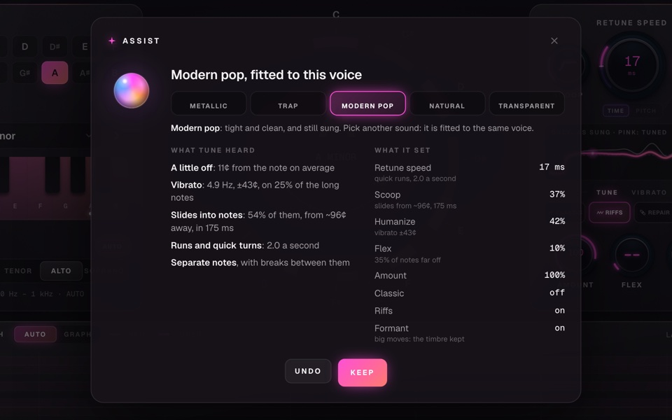
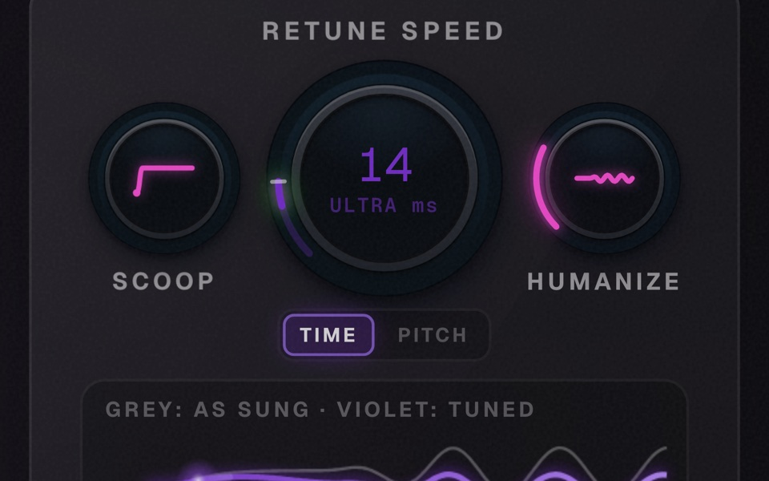
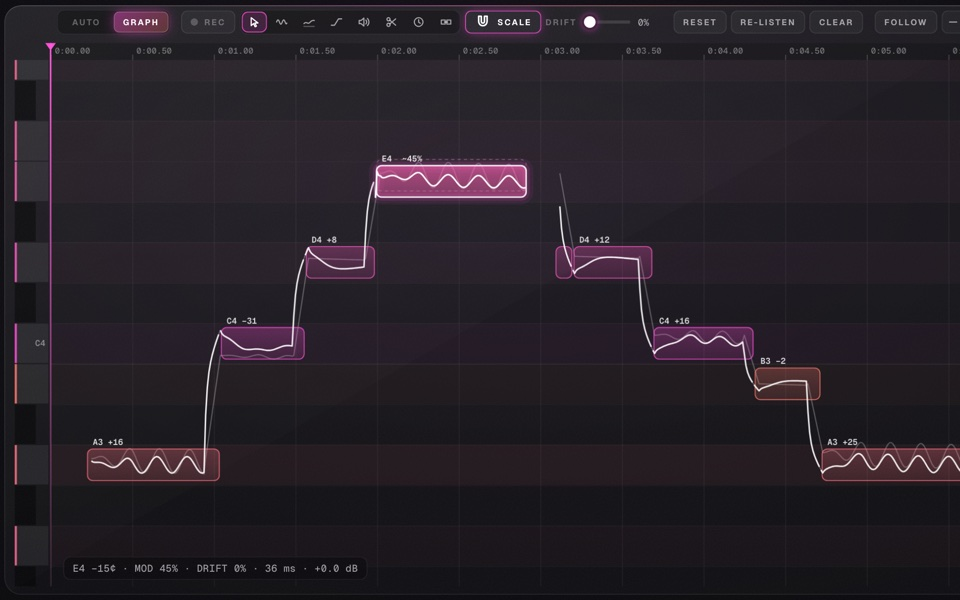
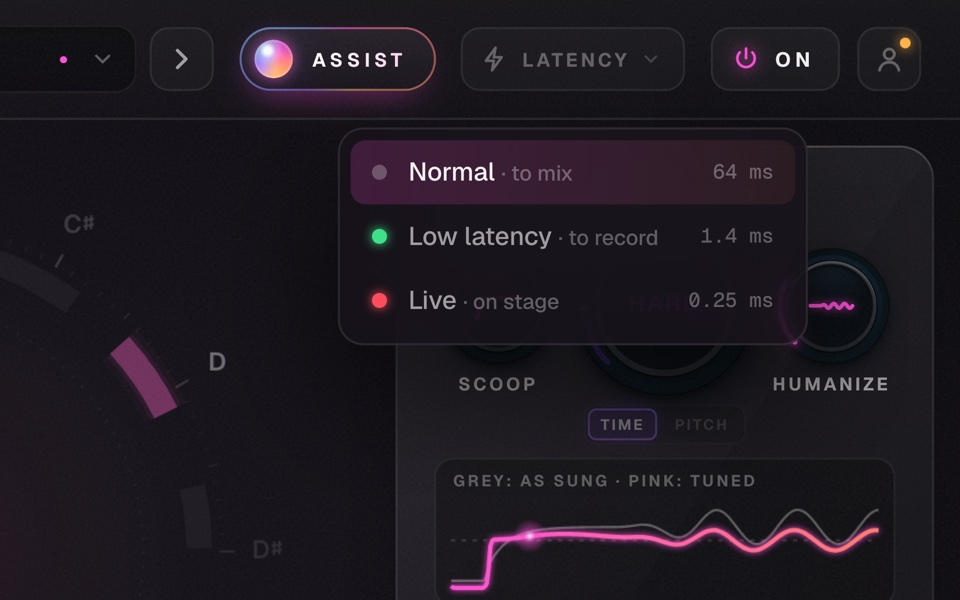
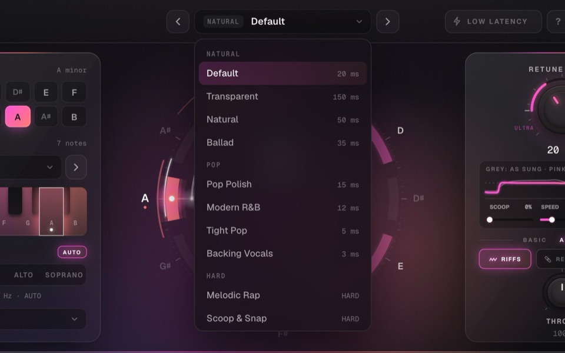
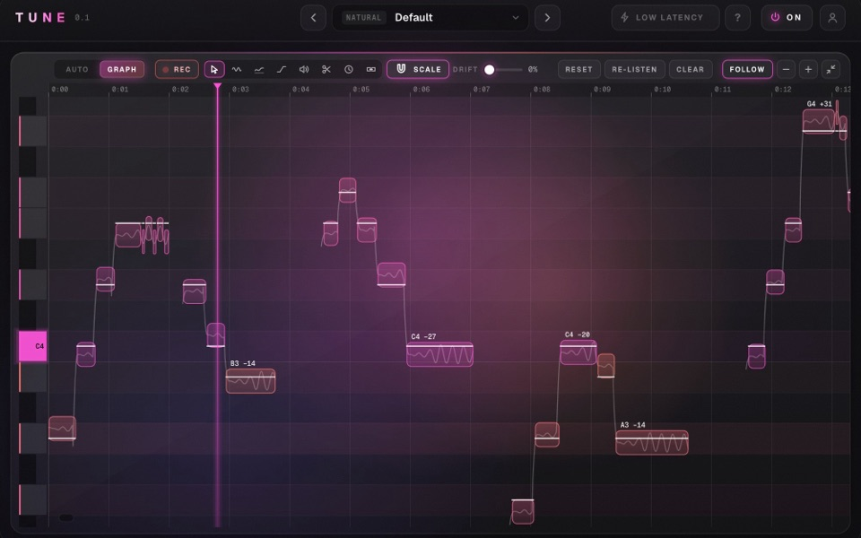
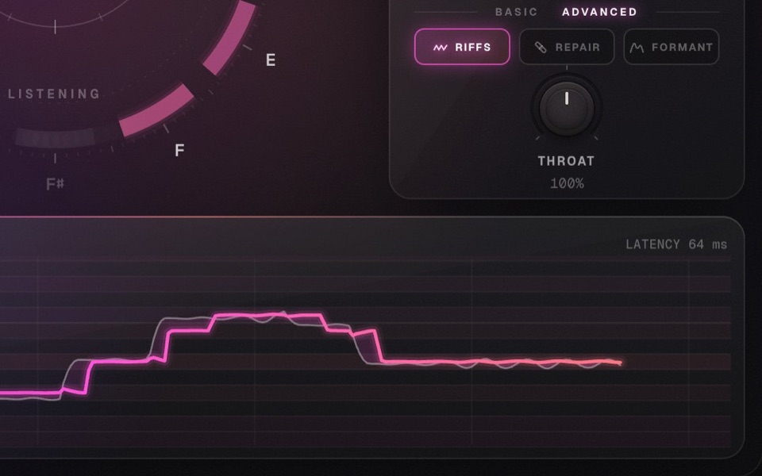
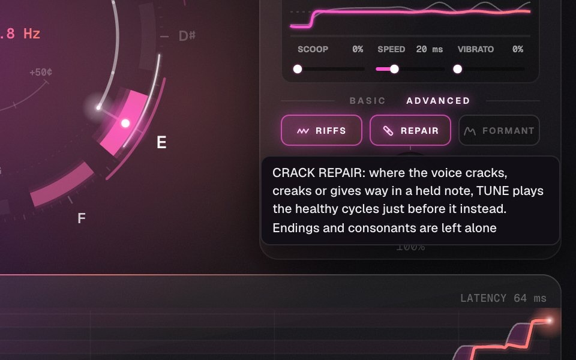
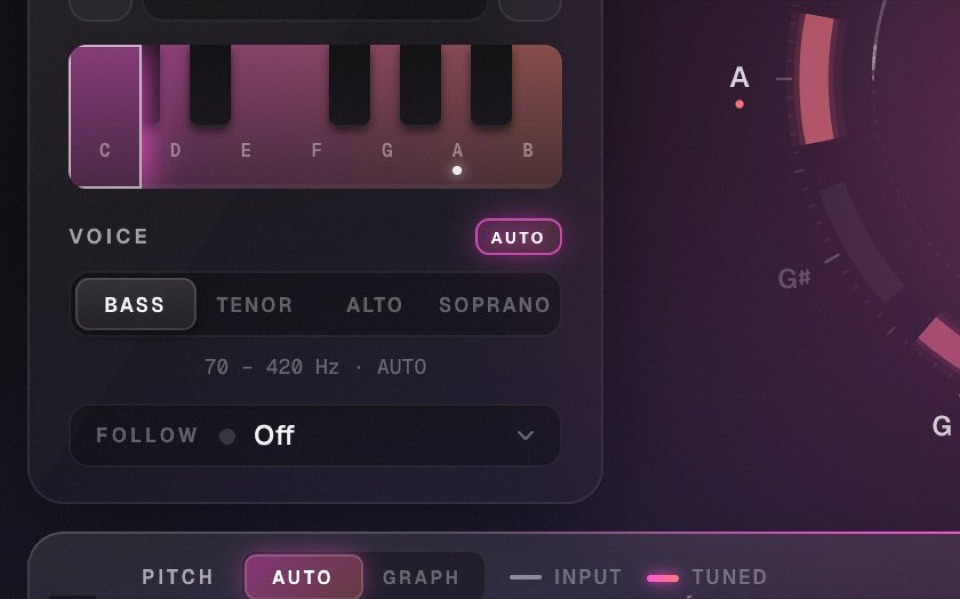
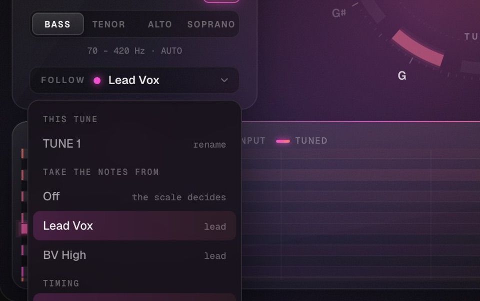

La prossima evoluzione dell'intonazione vocale. Scopri cosa sa fare VTUNE.
Preset
Punti di partenza pronti, da Natural a Hard fino a Ultra. Ognuno ha la sua velocità di correzione: accendi ? e passaci sopra per leggere cosa fa.
Low Latency
Per registrare: la voce torna con circa 1 ms di ritardo. Per il mix spegnilo: tornano Natural Riffs e Crack Repair, che hanno bisogno di ascoltare in anticipo.
Tonalità e scala
Scegli tonalità e scala: VTUNE porta ogni nota sulla nota della scala più vicina. Sul piano clicchi una nota per toglierla o rimetterla.
Voice e Follow
Voice Auto capisce da solo se canta un basso, un tenore, un contralto o un soprano e cerca solo lì: meno errori di ottava. Follow fa prendere a un coro le note della voce principale.
L'anello
Le dodici note in cerchio: la scia è la voce, la perla è la nota su cui VTUNE la porta. Al centro la nota, lo scarto in centesimi e la frequenza.
Retune Speed
Quanto in fretta la voce arriva sulla nota: lento resta umano, a zero è hard tune. Oltre lo zero c'è ULTRA: la nota cambia prima della voce, il suono del retune negativo.
Riffs, Repair, Formant
Riffs lascia abbellimenti e run come li hai cantati. Repair ripara le stecche sulle note tenute. Formant tiene il timbro al suo posto anche spostando molto la voce.
Pitch e Graph
Grigio: la voce come l'hai cantata. Rosa: come esce corretta. Passa a GRAPH per vedere le note e modificarle una per una.
Auto
Torna alla correzione automatica e alla vista principale con l'anello.
REC
Accendi REC e registra, o premi play: VTUNE ascolta la voce e disegna le note. Spegnilo quando hai finito: le note restano.
Strumenti
Seleziona e sposta, vibrato, drift, attacco, volume, taglia e unisci: uno strumento per ogni cosa che vuoi cambiare in una nota.
Scale
Le note che sposti atterrano solo sulle note della scala. Con Alt le muovi libere.
Drift
Raddrizza il lento ondeggiare delle note prima che VTUNE le intoni.
Reset, Re-listen, Clear
Reset riporta le note com'erano. Re-listen fa riascoltare un tratto come nuovo. Clear dimentica la voce sentita finora.
Follow
Tiene la testina sempre in vista mentre la traccia suona.
Le note
Clicca una nota per sentirla, trascinala su o giù per spostarla. Doppio clic la rimette sulla scala. Quelle che non tocchi suonano come le hai registrate.
VST3AUmacOSWindowsApple Silicon nativoLicenza a vita3 attivazioniDemo 3 giorniPreset inclusiVST3AUmacOSWindowsApple Silicon nativoLicenza a vita3 attivazioniDemo 3 giorniPreset inclusi
Le tecnologie di VTUNE
Ascolta. Prevede. Poi corregge.
Non il solito autotune: VTUNE prima capisce come canti, poi decide come intonarti.

Voice Print Analysis
Ti ascolta prima di toccarti.
Premi ASSIST e canta per 20 secondi. VTUNE segue la tua intonazione 200 volte al secondo, misura come canti e simula la correzione sulla tua voce prima di applicarla. Poi imposta tutto per il suono che scegli, e sotto ogni valore ti dice perché.
11caratteristiche della tua voce, misurate in 20 secondi

Predictive Pitch
Non insegue la nota. Ci arriva prima.
Gli autotune in tempo reale reagiscono quando la nota è già iniziata. ULTRA guarda avanti nella traccia e porta la correzione sulla nota nuova prima della voce: cambi di nota netti, senza l'effetto in ritardo.
20 msdi anticipo sul cambio di nota

Hybrid Tuning
Automatico e nota per nota. Insieme.
Le note che non tocchi le intona VTUNE da solo. Quelle da perfezionare le apri come in un editor professionale: altezza, vibrato, deriva, transizione, volume, tempo. Il grafico ti mostra in anteprima la voce come uscirà.
8strumenti di editing, nello stesso plugin

Live Mode
Pronto per il palco.
Una modalità a latenza minima per cantare con la correzione in cuffia o dal vivo, senza sentire nessun ritardo. Per registrare in studio c'è Low Latency, a 1,4 ms.
0,25 msdi latenza in Live
Riff Detection
I tuoi riff restano tuoi.
Abbellimenti, note di passaggio e run passano come li hai cantati, intonati con la nota che li circonda. Niente scalini robotici.
Zero-Latency Formant
Corretta, non trasformata.
Il timbro resta il tuo anche con le correzioni più grandi: niente voce da cartone animato, e nessuna latenza in più.
Crack Repair
Le stecche spariscono.
Dove la voce si incrina su una nota tenuta, VTUNE suona al suo posto i cicli sani appena prima.
VTUNE corregge la voce mentre canti, dal ritocco che non si sente all'hard tune. Poi accendi REC e modifichi le note una per una, come in Melodyne.
VTUNE
Waves Tune Real-Time
AutoTune Advanced
Slate Digital MetaTune
Prezzo
€39
$39,99
da $437
$199
Correzione in tempo reale
Sì
Sì
Sì
Sì
Modalità a bassa latenza
Sì, 0,25 ms (Live)
Sì
Sì, sotto 1 ms (Live)
Sì
Editor delle note
Sì, nello stesso plugin
No, è in Waves Tune, venduto a parte
No, è in Auto-Tune Pro 11, venduto a parte
No, per scelta: niente editor grafico
Correzione delle formanti
Sì
Sì
Sì (Formant Designer)
Sì
Retune negativo
Sì (ULTRA · Pitch)
No, minimo 0,1 ms
No, minimo 0 ms
Sì (Speed negativa)
Riff e abbellimenti lasciati come cantati
Sì (Natural Riffs)
In parte (Note Transition)
In parte (Flex Tune)
In parte (Note Stabilizer, solo in mix)
Riparazione delle note incrinate
Sì (Crack Repair)
No
No
No
Cori che seguono la voce principale
Sì (Follow Lead)
In parte: segue una melodia via MIDI
In parte (AutoKey 2: stessa tonalità su tutte le istanze)
In parte (Groups: stesse impostazioni su più tracce)
Formati
AU · VST3
AU · VST · VST3 · AAX
AU · VST3 · AAX
AU · VST · VST3 · AAX
Le funzioni degli altri plugin sono quelle descritte nei manuali, nelle pagine dei produttori e nelle recensioni a ottobre 2026: "No" vuol dire che lì non risultano, "In parte" che c'è una funzione vicina ma diversa. I prezzi sono quelli della licenza perpetua presso i rivenditori. Waves Tune è un marchio di Waves Audio Ltd.; Auto-Tune è un marchio di Antares Audio Technologies; MetaTune è un marchio di Slate Digital. Zazzi non è affiliato a nessuno di loro.

01 · Preset
Dal naturale all'hard tune
Scegli quanto deve essere veloce la correzione. I preset spiegano cosa fanno, da Melodic Rap all'Hard Tune anni 2000.

02 · Hybrid Tuning
Le note, una per una
VTUNE ascolta la voce e disegna le note. Le sposti, le tagli, le unisci; regoli vibrato, attacco e volume. Quelle che non tocchi restano come le hai registrate.

03 · Riff Detection
I riff restano riff
Abbellimenti, passaggi veloci e run passano come li hai cantati: si sposta solo la nota che li contiene. Senza Natural Riffs, lo scatto robotico.

04 · Crack Repair
Crack repair
Dove la voce si incrina o cede su una nota tenuta, VTUNE suona al suo posto i cicli sani appena prima. Finali e consonanti restano intatti.

05 · Zero-Latency Formant
Il timbro non cambia
Le formanti restano dove le aveva la voce, anche spostandola lontano. Voice Auto riconosce da solo basso, tenore, contralto o soprano.

06 · Follow Lead
Follow Lead
Un secondo VTUNE sui cori prende le note dalla voce principale e le canta nella sua ottava. Dove il lead tace, decide la scala.
Formati e DAW
AUVST3
Logic Pro
Ableton Live
GarageBand
FL Studio
Cubase e Nuendo
Studio One
Reaper
Bitwig Studio
E ogni altra DAW che carica plugin AU o VST3. Pro Tools no: VTUNE non è AAX. Vuoi provarlo nella tua? Prova 3 giorni gratis.
Requisiti di sistema
Mac: macOS 11 (Big Sur) o più recente, Apple Silicon nativo o Intel
Windows: Windows 10 o 11 a 64 bit
DAW a 64 bit con VST3 (o AU su Mac)
Una licenza vale su Mac e Windows: fino a 3 computer.
Licenza a vita · 3 computer · Mac e Windows · Acquistando o scaricando accetti iTermini e condizioni.
Nessuna appQR codePCM 16 bitFino a 96 kHzPiù telefoni insiemeAUVST3macOSWindowsNessuna appQR codePCM 16 bitFino a 96 kHzPiù telefoni insiemeAUVST3macOSWindows
Come funziona
Tre passi. Il terzo è play.
01 · Plugin
Mettilo sul master
VSTREAM lascia passare l'audio identico e ne manda una copia ai telefoni. Nel DAW non aggiunge latenza e non cambia niente.
02 · QR code
Inquadra il QR
Telefono e PC sulla stessa rete Wi-Fi: la fotocamera apre la pagina di VSTREAM. Niente app da installare, niente account.
03 · Play
Ascolta mentre lavori
Il DAW suona e il telefono ascolta. Sposti un fader, cambi un EQ: lo senti subito, senza esportare niente.
Le tecnologie di VSTREAM
Veloce. Pulito. Sempre a tempo.
Un piccolo server dentro il plugin, una pagina web sul telefono e niente in mezzo.
Minimo
50 ms
Normale
110 ms
Stabile
260 ms
DAWTelefono
Latenza minima
Lo senti mentre lo cambi.
Scegli tu quanto ritardo tenere. Minimo per lavorare con il telefono in mano, Normale per tutti i giorni, Stabile quando il Wi-Fi è affollato. Il telefono mostra il ritardo vero, rete compresa.
50 msdi buffer in Minimo, il ritardo più basso
PCM16 bitstereo
44,1 kHz48 kHz96 kHz
Qualità piena
Il mix com'è. Non un MP3.
Niente compressione: VSTREAM manda audio PCM a 16 bit, stereo, alla frequenza del tuo progetto. Il passaggio a 16 bit ha il suo dither. Quello che senti sul telefono è il mix, non una sua copia schiacciata.
16 bitPCM non compresso, alla frequenza del DAW
PC
Telefono
Buffer
110 ms
Clock Lock
Un'ora dopo, ancora a tempo.
Il PC e il telefono hanno due orologi che si allontanano piano piano. VSTREAM legge l'audio un pelo più veloce o più lento, al massimo dello 0,15%: il ritardo resta quello scelto e l'intonazione non si muove.
< 3 centdi correzione, sotto quello che l'orecchio sente
SorgentiMasterVoceBeat
In ascoltoiPhoneAndroidiPad
Multi Source
Tutta la stanza ascolta.
Si collegano più telefoni insieme, e il plugin ti dice chi sta ascoltando. Metti VSTREAM anche su un bus o su una traccia: dal telefono scegli cosa sentire, ognuna con il nome che le dai.
Mono
Come lo sentirà la gente.
Un interruttore somma sinistro e destro, come l'altoparlante di un telefono. Senti subito se la voce o il basso spariscono.
On Air
Spegni quando vuoi.
Un tasto ferma l'invio a tutti i telefoni. Il DAW continua a suonare come prima.
Web App
Come un'app, senza esserlo.
Su iPhone: Condividi, poi Aggiungi a Home. La volta dopo VSTREAM si apre con un tocco, a schermo intero.
Quando ti serve
Il mix fuori dalle casse da studio.
Quasi tutti ascolteranno la tua musica da un telefono. VSTREAM te lo fa sentire prima di esportare.
01 · Phone check
Il test dell'altoparlante
Voce, basse e kick sull'altoparlante vero, mentre il progetto è ancora aperto. Correggi e risenti in un secondo.
02 · Altra stanza
Il mix dal divano
Allontanati dalla scrivania e ascolta da un'altra stanza, con le cuffie del telefono. Le orecchie fresche sentono di più.
03 · In studio
Il cliente ascolta
Chi è venuto a sentire il pezzo ascolta dal suo telefono mentre lavori, senza passarsi le cuffie.
Formati e DAW
AUVST3
Logic Pro
Ableton Live
FL Studio
Cubase e Nuendo
Studio One
LUNA
Reaper
Bitwig Studio
E ogni altra DAW che carica plugin AU o VST3. Pro Tools no: VSTREAM non è AAX.
Cosa serve
Wi-FiBrowser
PC: Mac con macOS 11 o più recente, o Windows 10 e 11 a 64 bit
Telefono: iPhone o Android, con Safari o Chrome
PC e telefono sulla stessa rete, anche l'hotspot del telefono
Il plugin ascolta sulla porta 7171. Se è occupata, prende la prima libera fino alla 7180.
Ti abbiamo mandato un'email con il codice di licenza, il file VSTREAM.lic e i link per scaricare VSTREAM. Di solito arriva entro un minuto: se non la vedi, controlla anche lo spam.
Installa VSTREAM sul tuo computer.
Aprilo nella DAW, sul master o su una traccia.
Clicca Licence in basso a destra e trascina VSTREAM.lic, o incolla il codice.
L'email non è arrivata dopo 10 minuti? Scrivi azazziprod@gmail.comcon l'indirizzo che hai usato per pagare.
Documenti legali
Termini e condizioni
Versione 1.1 · in vigore dal 16 ottobre 2026
Le regole per scaricare, provare, comprare e usare i plugin di Vault Plugins. Le abbiamo scritte per essere lette: frasi semplici, niente sorprese.
1. Chi siamo e a cosa servono questi termini
Vault Plugins è il sito zazziplugins.com con i plugin audio che vi trovi, come VTUNE e VSTREAM (insieme, "i Plugin"). È un'attività di Lorenzo Zazzera, Via San Mandato 16, 80136 Napoli (NA), Italia, codice fiscale ZZZLNZ02P15F839N, email zazziprod@gmail.com ("noi").
Questi termini sono il contratto tra te e noi ogni volta che scarichi, provi, compri o usi un Plugin, gratuito o a pagamento. Comprendono la licenza d'uso dei Plugin (sezione 8).
Li accetti al checkout, quando compri o inizi una Prova, oppure, per i Plugin gratuiti, quando li scarichi o li installi. Se non li accetti, non scaricare e non usare i Plugin.
Se compri per scopi estranei alla tua attività professionale sei un consumatore: niente in questi termini toglie o riduce i diritti che la legge ti riconosce e che un contratto non può escludere. Se una clausola è in contrasto con quelle norme, valgono le norme. Le parti dedicate ai consumatori (recesso, garanzia legale dei consumatori, foro del consumatore) non si applicano a chi compra per la propria attività professionale o d'impresa.
2. Parole che usiamo
Plugin
un software audio di Vault Plugins in formato VST3 o AU, insieme ai preset, ai manuali e ai file che lo accompagnano.
Licenza
il diritto di usare un Plugin alle condizioni della sezione 8. Può essere singola (pagamento unico), in abbonamento, in Prova o gratuita.
Codice di licenza
il codice, o il file .lic, che ricevi via email e che sblocca il Plugin.
Attivazione
il collegamento di un Codice di licenza a uno dei tuoi computer.
Versione
la serie principale di un Plugin, indicata dal primo numero: per esempio, tutte le 1.x sono la Versione 1. Le versioni 0.x fanno parte della Versione 1.
Prova
il periodo gratuito, con tutte le funzioni, che alcuni Plugin offrono prima dell'acquisto.
3. I Plugin e cosa serve per usarli
Cosa fa ogni Plugin è descritto nella sua pagina sul sito, e la descrizione fa parte del contratto. Le immagini mostrano l'interfaccia reale, che può cambiare un po' da un aggiornamento all'altro.
Per usare i Plugin servono:
un Mac con macOS 11 (Big Sur) o successivo, Apple Silicon o Intel, oppure un PC con Windows 10 o 11 a 64 bit;
una DAW a 64 bit che carica plugin VST3 (o AU su Mac);
una connessione a internet per l'Attivazione (sezione 9).
I Plugin non sono disponibili in formato AAX, quindi non funzionano in Pro Tools. Eventuali requisiti in più sono indicati nella pagina di ciascun Plugin. Ti consigliamo di provare il Plugin sul tuo sistema prima di comprarlo, con la Prova o la versione gratuita quando ci sono.
Alcuni Plugin si scaricano gratis. Anche per loro valgono questi termini, tranne le parti su prezzi, pagamento e recesso.
4. Come si conclude l'acquisto
Il contratto si conclude online, in italiano o in inglese, in quattro passaggi:
premi Acquista o Prova gratis su un Plugin: si apre la pagina di pagamento di Stripe con il riepilogo dell'ordine, cioè il Plugin, il tipo di Licenza, il prezzo finale con le imposte e, per la Prova, la data del primo addebito;
prima di pagare puoi controllare e correggere i dati inseriti, oppure tornare indietro senza impegno. Al checkout ti chiediamo anche di accettare questi termini;
il contratto è concluso quando confermi il pagamento o l'inizio della Prova;
ricevi via email la conferma con il riepilogo dell'ordine, il Codice di licenza, il link per scaricare il Plugin e il link a questi termini. Conservala: è la tua copia del contratto. Puoi anche stampare questa pagina o salvarla in PDF.
Conserviamo i dati dell'ordine per gli obblighi contabili e per assisterti. Se perdi l'email di conferma o il Codice di licenza, scrivici dall'indirizzo usato per l'acquisto e te li rimandiamo.
5. Prezzi e pagamento
I prezzi sono in euro. Il prezzo finale, imposte comprese, è quello mostrato al checkout prima che tu confermi, senza costi aggiuntivi. La tua banca può applicare commissioni proprie, per esempio per il cambio valuta.
I pagamenti passano da Stripe, che per i nostri acquisti agisce come rivenditore (merchant of record) con il suo servizio Managed Payments: incassa l'importo, calcola e versa le imposte, ti manda la ricevuta e gestisce le contestazioni di pagamento. Per questo sull'estratto conto l'addebito può comparire con il nome di Stripe o di Link. Si paga con carta o con gli altri metodi mostrati al checkout; i dati della carta li tratta Stripe e noi non li vediamo. La Licenza e il Plugin, invece, te li forniamo noi alle condizioni di questi termini.
Possiamo cambiare i prezzi in qualsiasi momento, ma il cambio non tocca gli ordini già conclusi. Se un prezzo sul sito è sbagliato in modo evidente (per esempio €3,90 invece di €39), ti avvisiamo prima di consegnare la Licenza: puoi confermare l'ordine al prezzo corretto o annullarlo con il rimborso completo.
Sconti e codici promozionali valgono alle condizioni indicate quando li offriamo e non si sommano tra loro, salvo diversa indicazione.
Se contesti con la tua banca un pagamento (chargeback), la Licenza collegata può restare sospesa finché la contestazione è aperta. Prima di farlo scrivici: quasi sempre si risolve in fretta.
6. Prova gratuita
Alcuni Plugin possono offrire una Prova gratuita di qualche giorno, con tutte le funzioni: se c'è, lo trovi nella pagina del Plugin e nel riepilogo del checkout. VSTREAM non ha una Prova gratuita: al suo posto hai il recesso di 14 giorni della sezione 12.
Per iniziare una Prova inserisci un metodo di pagamento al checkout. Durante la Prova non paghi niente. Alla fine, se non l'hai annullata, ti viene addebitato il prezzo della Licenza indicato al checkout e il Plugin continua a funzionare senza interruzioni.
Puoi annullare la Prova in qualsiasi momento prima che finisca, senza costi, con gli strumenti indicati nell'email di conferma della Prova oppure scrivendo a zazziprod@gmail.com: fa fede l'ora di invio della tua email. Se la annulli, alla fine della Prova il Plugin smette di funzionare finché non attivi una Licenza. I tuoi progetti restano intatti.
La Prova spetta una volta per persona e per Plugin. Possiamo rifiutare una nuova Prova a chi l'ha già avuta, per esempio con un altro indirizzo email.
7. Abbonamento All Access
Quando è disponibile, l'abbonamento All Access dà accesso a tutti i Plugin del catalogo, compresi quelli che usciranno, per tutto il tempo in cui resta attivo. Può essere mensile o annuale.
L'abbonamento si rinnova da solo alla fine di ogni periodo, al prezzo in vigore, finché non lo disdici. Puoi disdirlo quando vuoi, senza costi né preavviso, con gli strumenti indicati nell'email di conferma o scrivendoci. La disdetta ferma i rinnovi e l'accesso resta attivo fino alla fine del periodo già pagato, che non viene rimborsato, salvo i casi delle sezioni 12 e 14.
Se aumentiamo il prezzo, te lo scriviamo almeno 30 giorni prima del rinnovo a cui si applica, così puoi disdire prima senza costi. L'aumento non tocca mai il periodo in corso.
Se un rinnovo non va a buon fine, Stripe riprova per qualche giorno. Se il pagamento non arriva, l'abbonamento si chiude.
Quando l'abbonamento finisce, i Plugin inclusi si aprono in bypass, cioè lasciano passare l'audio senza elaborarlo. I progetti e le impostazioni salvate restano, e tornano attivi se ti abboni di nuovo o compri la Licenza singola del Plugin.
Il catalogo può cambiare. Se togliamo un Plugin dall'abbonamento e questo peggiora in modo non trascurabile ciò che hai pagato, puoi recedere entro 30 giorni dalla comunicazione e ti rimborsiamo la parte di periodo non goduta.
8. Licenza d'uso
Il software resta nostro: con la Licenza compri il diritto di usarlo, non il software. Ti concediamo una licenza personale e non esclusiva per installare e usare il Plugin alle condizioni di questa sezione.
Durata
La Licenza singola vale a tempo indeterminato per la Versione acquistata. La Licenza in abbonamento dura finché l'abbonamento è attivo, quella di Prova per la durata della Prova. I Plugin gratuiti li puoi usare a tempo indeterminato.
Computer
Ogni Licenza si può attivare su 3 computer alla volta, Mac e Windows insieme. I computer devono essere tuoi o usati da te. Se la Licenza è intestata a uno studio o a un'azienda, possono usarla le persone che lavorano per loro, sempre entro i 3 computer.
Per passare a un altro computer, disattiva la Licenza su uno di quelli attivi con il pulsante nel Plugin. Le disattivazioni hanno un limite mensile, per evitare che una Licenza giri tra più persone. Se lo raggiungi, o se un computer si è rotto o ti è stato rubato, scrivici e lo liberiamo noi.
Cosa puoi fare
Puoi usare i Plugin per lavori personali e commerciali: produzioni, mix, master, concerti, dirette, lavori per clienti. L'audio che crei è tuo e non ci devi royalty né citazioni. Puoi usare e modificare i preset inclusi nelle tue produzioni.
Cosa non puoi fare
condividere o pubblicare il Codice di licenza o il file .lic, o usarli su più di 3 computer;
aggirare, disattivare o manomettere il sistema di licenza, o usare copie modificate del Plugin;
copiare, distribuire, vendere, noleggiare, prestare o sublicenziare il Plugin, o renderlo disponibile ad altri, per esempio su un server o dentro un pacchetto di software;
vendere o distribuire i preset inclusi come preset;
decompilare, disassemblare o fare reverse engineering del Plugin, salvo nei limiti in cui la legge lo consente e non può essere escluso (art. 64-quater della legge 633/1941);
usare il Plugin, la sua interfaccia o i suoi suoni per creare un prodotto concorrente;
togliere o modificare gli avvisi di copyright e i marchi.
Cedere la Licenza
Puoi cedere una Licenza singola a un'altra persona, per intero. Scrivici: la intestiamo al nuovo titolare e la disattiviamo sui tuoi computer, e da quel momento non puoi più usarla. Le Licenze in Prova, quelle in abbonamento e le copie date per recensioni non si possono cedere.
Componenti di terzi
I Plugin possono contenere componenti di terzi con licenze proprie, che restano valide per quei componenti. Le relative note sono nel pacchetto di installazione, oppure te le mandiamo su richiesta.
9. Attivazione e collegamento a internet
I Plugin a pagamento si attivano inserendo il Codice di licenza o trascinando il file .lic nel Plugin, e per farlo serve internet. Dopo l'Attivazione funzionano anche senza connessione, e ogni tanto si ricollegano da soli per rinnovarla. Se un computer resta offline a lungo, a un certo punto il Plugin ti chiede di collegarti per continuare.
Per attivare e rinnovare la Licenza, il Plugin manda ai nostri server il Codice di licenza, un identificativo del computer calcolato dal Plugin, il nome del computer (per mostrarti quali computer usano la Licenza), il nome e la versione del Plugin. Come per ogni collegamento, il server riceve anche l'indirizzo IP. Usiamo questi dati solo per gestire le Licenze, prevenire gli abusi e assisterti: non li vendiamo e non li usiamo per pubblicità. Per qualsiasi richiesta sui tuoi dati scrivici a zazziprod@gmail.com.
Tieni corrette la data e l'ora del computer: una data sbagliata può impedire la verifica della Licenza.
Se i nostri server sono momentaneamente irraggiungibili, i Plugin già attivati continuano a funzionare e noi ripristiniamo il servizio il prima possibile. Se un giorno dovessimo chiudere il servizio di attivazione, te lo diremo con almeno 90 giorni di anticipo e pubblicheremo un aggiornamento gratuito che permetta di usare le Licenze singole senza verifica online.
10. Aggiornamenti
Con la Licenza singola ricevi gratis tutti gli aggiornamenti della Versione acquistata: correzioni, compatibilità con i nuovi sistemi e migliorie. Una nuova Versione (per esempio la 2.0) può essere a pagamento, e quella che hai già continui a usarla senza limiti. Con l'abbonamento hai sempre l'ultima Versione.
Ti forniamo, e ti segnaliamo, gli aggiornamenti necessari a mantenere il Plugin conforme, compresi quelli di sicurezza, per tutto il periodo previsto dalla legge (art. 135-decies del Codice del Consumo). Installarli è una tua scelta, ma se non installi un aggiornamento che ti abbiamo segnalato non rispondiamo dei difetti che quell'aggiornamento avrebbe corretto.
Lavoriamo per mantenere i Plugin compatibili con le nuove versioni dei sistemi operativi e delle DAW, ma non possiamo garantirlo per versioni uscite dopo il tuo acquisto, salvo quanto previsto dalla garanzia legale.
Possiamo modificare i Plugin per migliorarli o per ragioni tecniche e legali. Se una modifica peggiora in modo non trascurabile il tuo uso del Plugin te lo comunichiamo e, se sei un consumatore, puoi recedere gratis entro 30 giorni dalla comunicazione (art. 135-undecies del Codice del Consumo), a meno che ti permettiamo di continuare a usare la versione precedente.
11. VSTREAM e la rete locale
VSTREAM manda l'audio del tuo DAW ai telefoni collegati alla stessa rete locale, attraverso un piccolo server che apre sul tuo computer (porte da 7171 a 7180). L'audio non passa da internet né dai nostri server: non lo riceviamo, non lo ascoltiamo e non lo registriamo.
Mentre VSTREAM è attivo, chiunque sia sulla stessa rete e abbia l'indirizzo o il QR può ascoltare, e il plugin mostra quali telefoni sono collegati. Usalo su reti di cui ti fidi, come quella di casa o dello studio: su reti pubbliche o condivise (hotel, coworking, eventi) altre persone potrebbero ascoltare. Per smettere di trasmettere, disattiva il plugin o toglilo dalla traccia.
Sei tu responsabile di avere i diritti sull'audio che trasmetti e di proteggerne la riservatezza, per esempio quando lavori ai brani inediti di un cliente.
Il sistema operativo o il firewall possono chiederti il permesso di accettare connessioni in entrata: serve a far collegare i telefoni. La qualità dell'ascolto dipende dalla rete Wi-Fi, e le interruzioni dovute a una rete lenta, congestionata o che isola i dispositivi tra loro non sono un difetto del plugin.
12. Diritto di recesso
Se sei un consumatore puoi recedere dal contratto entro 14 giorni da quando l'hai concluso, senza dare motivazioni. Vale anche se hai già scaricato il Plugin e attivato la Licenza: non ti chiediamo di rinunciarci al checkout.
Per recedere mandaci una dichiarazione esplicita entro i 14 giorni, scrivendo a zazziprod@gmail.com dall'indirizzo usato per l'acquisto (va bene anche rispondere all'email della Licenza), con la data dell'ordine e il Plugin. Puoi usare il modulo in fondo a questa pagina, ma non è obbligatorio. Basta inviarla prima che i 14 giorni scadano.
Se il recesso è valido ti rimborsiamo entro 14 giorni da quando lo riceviamo, con lo stesso metodo di pagamento usato per l'acquisto e senza costi per te. Con il rimborso la Licenza si disattiva su tutti i computer: disinstalla il Plugin e non usarlo più.
Per una Prova vale la sezione 6: durante la Prova puoi annullare senza costi. Per un abbonamento, i 14 giorni valgono per il primo periodo; poi puoi disdire quando vuoi (sezione 7).
13. Rimborsi oltre il recesso
Oltre a quanto previsto dalla legge, possiamo concedere un rimborso caso per caso. Se hai comprato per errore due volte lo stesso Plugin, ti rimborsiamo sempre il secondo acquisto: scrivici entro 30 giorni.
Ogni rimborso avviene con lo stesso metodo di pagamento e disattiva la Licenza rimborsata.
14. Garanzia legale di conformità
Se sei un consumatore hai la garanzia legale di conformità per i contenuti digitali prevista dagli articoli 135-octies e seguenti del Codice del Consumo (D.Lgs. 206/2005). Il Plugin deve corrispondere alla sua descrizione, funzionare sui sistemi indicati nei requisiti e avere le qualità che puoi ragionevolmente aspettarti, compresi gli aggiornamenti della sezione 10.
Per la Licenza singola rispondiamo dei difetti che si manifestano entro 2 anni dalla consegna; per l'abbonamento, dei difetti che si manifestano mentre è attivo.
Se il Plugin non è conforme puoi chiederci di renderlo conforme, gratis ed entro un tempo ragionevole. Se non è possibile, se non lo facciamo o se il difetto è grave, puoi chiedere una riduzione proporzionata del prezzo oppure, se il difetto non è di lieve entità, la risoluzione del contratto con il rimborso.
Per segnalare un difetto scrivici descrivendo il problema, il tuo sistema operativo, la DAW e la versione del Plugin. Potremmo chiederti qualche informazione in più sul tuo sistema, per capire se il problema dipende da lì: per legge sei tenuto a collaborare nei limiti del ragionevole, e noi usiamo il mezzo meno invasivo possibile.
Non sono difetti del Plugin i problemi causati da sistemi o DAW fuori dai requisiti, da copie modificate, da un uso contrario a questi termini, da malware o da guasti del tuo hardware.
Se non sei un consumatore, si applica la garanzia prevista dal codice civile, nei limiti della sezione 15.
15. Responsabilità
Costruiamo e testiamo i Plugin con cura, ma nessun software è privo di errori. Salva spesso i progetti e tienine una copia di sicurezza.
Nei limiti consentiti dalla legge non rispondiamo di:
danni indiretti o che non erano prevedibili quando hai concluso il contratto;
mancati guadagni od occasioni perse;
perdite di progetti o file che una normale copia di sicurezza avrebbe evitato;
danni causati da un uso contrario a questi termini o fuori dai requisiti;
interruzioni di reti o di servizi di terzi fuori dal nostro ragionevole controllo.
Se non sei un consumatore, la nostra responsabilità complessiva verso di te è limitata a quanto hai pagato per la Licenza interessata nei 12 mesi precedenti al fatto.
Queste limitazioni non valgono in caso di dolo o colpa grave, per i danni alla persona e in ogni altro caso in cui la legge non permette di limitare la responsabilità, e non toccano la garanzia legale.
Volume e udito
I Plugin possono produrre suoni forti, per esempio con correzioni estreme o ascoltando in cuffia con VSTREAM. Tieni un volume moderato e alzalo con gradualità. Se senti fastidio, fischi o ronzii, smetti di ascoltare.
16. Proprietà intellettuale e marchi
I Plugin, il codice, gli algoritmi, l'interfaccia, i suoni, i preset, i testi, le immagini e i video del sito, e i nomi e i loghi Vault Plugins, Zazzi, VTUNE e VSTREAM appartengono a Lorenzo Zazzera o a chi ce li ha concessi in licenza, e sono protetti dalle leggi sul diritto d'autore e sui marchi. Oltre alla Licenza della sezione 8 non ti è concesso alcun diritto.
VST è un marchio di Steinberg Media Technologies GmbH. Audio Units, Mac, macOS, Logic Pro, iPhone e Apple Silicon sono marchi di Apple Inc. Windows è un marchio di Microsoft Corporation. Pro Tools e AAX sono marchi di Avid Technology, Inc. Android è un marchio di Google LLC. Gli altri nomi di prodotti e aziende citati sul sito appartengono ai rispettivi titolari e sono usati solo per indicare la compatibilità o per confrontare le funzioni: Vault Plugins non è affiliato a loro né approvato da loro.
Se ci mandi idee o suggerimenti, possiamo usarli liberamente per migliorare i Plugin, senza obblighi verso di te.
17. Sospensione e revoca della Licenza
Possiamo sospendere o revocare una Licenza se il Codice viene condiviso o pubblicato, se qualcuno tenta di aggirare il sistema di licenza, se il pagamento viene annullato o risulta fraudolento, o in caso di altre violazioni gravi di questi termini.
Prima ti scriviamo spiegando il motivo e, quando la violazione si può rimediare, ti diamo 14 giorni per farlo. Se pensi che sia un errore rispondi a quell'email: se avevi ragione, riattiviamo subito la Licenza.
La revoca per violazione non dà diritto a rimborso, salvo i diritti che la legge ti riconosce comunque.
18. Modifiche a questi termini
Possiamo aggiornare questi termini per giustificati motivi, come nuovi Plugin o servizi, cambiamenti tecnici o nuove norme. In cima alla pagina trovi sempre la versione e la data.
A ogni acquisto si applica la versione dei termini che hai accettato in quel momento. Le modifiche successive non peggiorano i tuoi diritti sulle Licenze già comprate, salvo quanto imposto dalla legge.
Per gli abbonamenti, le modifiche rilevanti te le comunichiamo via email almeno 30 giorni prima che si applichino. Se non le accetti, puoi disdire prima senza costi.
Le versioni precedenti dei termini te le mandiamo su richiesta.
19. Legge applicabile e controversie
Questi termini sono regolati dalla legge italiana. Se sei un consumatore residente in un altro Paese dell'Unione europea, conservi la protezione delle norme inderogabili del Paese in cui vivi.
Se sei un consumatore, per le controversie è competente il giudice del luogo in cui risiedi o hai domicilio (art. 66-bis del Codice del Consumo). Per le controversie con chi non è consumatore è competente in via esclusiva il Foro di Napoli.
Prima di rivolgerti a un giudice scrivici: quasi tutti i problemi si risolvono via email. Puoi anche usare le procedure di risoluzione alternativa delle controversie previste dagli articoli 141 e seguenti del Codice del Consumo.
20. Disposizioni generali
Se una clausola risulta nulla o inefficace, le altre restano valide.
Se non facciamo valere subito un diritto, non per questo vi rinunciamo.
Se hai meno di 18 anni puoi comprare solo con il consenso di un genitore o di chi ne fa le veci.
Possiamo trasferire questo contratto a una società che subentri nella gestione di Vault Plugins, purché le tue tutele non si riducano. Te lo comunichiamo prima e, se non sei d'accordo, puoi recedere senza costi.
Le comunicazioni sul contratto le ricevi all'indirizzo email usato per l'acquisto; le tue vanno a zazziprod@gmail.com.
Questi termini esistono in italiano e in inglese. In caso di differenze prevale l'italiano, fatte salve le norme inderogabili a tutela dei consumatori.
Questi termini, insieme alla conferma dell'ordine, sono l'intero accordo tra te e noi sui Plugin.
Per qualsiasi domanda su questi termini, sulla tua Licenza o sui tuoi dati, scrivici.
Modulo di recesso tipo
Compila e invia questo modulo solo se vuoi recedere dal contratto.
Destinatario: Lorenzo Zazzera · Vault Plugins, Via San Mandato 16, 80136 Napoli (NA), Italia · zazziprod@gmail.com
Con la presente io/noi (*) notifico/notifichiamo (*) il recesso dal mio/nostro (*) contratto per la fornitura del seguente contenuto digitale: ______
Ordinato il: ______
Codice di licenza o numero d'ordine: ______
Nome del/dei consumatore/i: ______
Indirizzo del/dei consumatore/i: ______
Email usata per l'acquisto: ______
Firma del/dei consumatore/i (solo se il modulo è inviato su carta): ______
Data: ______
(*) Cancellare la dicitura inutile.
Legal
Terms and conditions
Version 1.1 · effective 16 October 2026
The rules for downloading, trying, buying and using Vault Plugins. We wrote them to be read: plain sentences, no surprises.
1. Who we are and what these terms cover
Vault Plugins is the website zazziplugins.com and the audio plugins you find there, such as VTUNE and VSTREAM (together, "the Plugins"). It is run by Lorenzo Zazzera, Via San Mandato 16, 80136 Napoli (NA), Italy, tax code ZZZLNZ02P15F839N, email zazziprod@gmail.com ("we", "us").
These terms are the contract between you and us whenever you download, try, buy or use a Plugin, free or paid. They include the licence to use the Plugins (section 8).
You accept them at checkout, when you buy or start a Trial, or, for free Plugins, when you download or install them. If you don't accept them, don't download or use the Plugins.
If you buy for purposes outside your trade or profession, you are a consumer: nothing in these terms takes away or reduces the rights the law gives you that a contract cannot exclude. If a clause conflicts with those rules, the rules prevail. The parts written for consumers (withdrawal, the consumer legal guarantee, the consumer's court) do not apply to those who buy for their business or profession.
2. Words we use
Plugin
a Vault Plugins audio software in VST3 or AU format, with the presets, manuals and files that come with it.
Licence
the right to use a Plugin under section 8. It can be single (one-off payment), subscription, Trial or free.
Licence code
the code, or the .lic file, you receive by email that unlocks the Plugin.
Activation
linking a Licence code to one of your computers.
Version
a Plugin's main series, shown by its first number: for example, all 1.x releases are Version 1. The 0.x releases are part of Version 1.
Trial
the free, full-featured period some Plugins offer before purchase.
3. The Plugins and what you need to use them
What each Plugin does is described on its page on the website, and that description is part of the contract. The images show the real interface, which may change slightly from one update to the next.
To use the Plugins you need:
a Mac with macOS 11 (Big Sur) or later, Apple Silicon or Intel, or a PC with 64-bit Windows 10 or 11;
a 64-bit DAW that loads VST3 plugins (or AU on Mac);
an internet connection for Activation (section 9).
The Plugins are not available in AAX format, so they don't work in Pro Tools. Any extra requirements are listed on each Plugin's page. We recommend trying a Plugin on your system before buying it, with the Trial or the free version where available.
Some Plugins are free to download. These terms apply to them too, except the parts on prices, payment and withdrawal.
4. How a purchase is made
The contract is made online, in Italian or English, in four steps:
you press Buy or Free trial on a Plugin: Stripe's payment page opens with the order summary, that is the Plugin, the type of Licence, the final price including taxes and, for a Trial, the date of the first charge;
before paying you can check and correct the details you entered, or go back with no commitment. At checkout we also ask you to accept these terms;
the contract is made when you confirm the payment or the start of the Trial;
you receive a confirmation email with the order summary, your Licence code, the link to download the Plugin and the link to these terms. Keep it: it is your copy of the contract. You can also print this page or save it as a PDF.
We keep order data for accounting obligations and to support you. If you lose the confirmation email or your Licence code, write to us from the address you used to buy and we will send them again.
5. Prices and payment
Prices are in euros. The final price, taxes included, is the one shown at checkout before you confirm, with no extra costs. Your bank may charge its own fees, for example for currency conversion.
Payments go through Stripe, which acts as the reseller (merchant of record) for our purchases through its Managed Payments service: it collects the payment, calculates and pays the taxes, sends you the receipt and handles payment disputes. That is why the charge may show on your statement under the name of Stripe or Link. You pay by card or with the other methods shown at checkout; card details are handled by Stripe and we never see them. The Licence and the Plugin, on the other hand, are supplied by us under these terms.
We may change prices at any time, but a change never affects orders already made. If a price on the website is obviously wrong (for example €3.90 instead of €39), we tell you before delivering the Licence: you can confirm the order at the correct price or cancel it with a full refund.
Discounts and promo codes apply on the terms stated when we offer them and cannot be combined, unless stated otherwise.
If you dispute a payment with your bank (chargeback), the related Licence may stay suspended while the dispute is open. Write to us first: it is almost always sorted out quickly.
6. Free trial
Some Plugins may offer a free Trial of a few days with every feature: if so, you'll find it on the Plugin's page and in the checkout summary. VSTREAM has no free Trial: instead, you have the 14-day withdrawal in section 12.
To start a Trial you enter a payment method at checkout. You pay nothing during the Trial. At the end, unless you have cancelled, you are charged the Licence price shown at checkout and the Plugin keeps working without interruption.
You can cancel the Trial at any time before it ends, at no cost, with the tools given in the Trial confirmation email or by writing to zazziprod@gmail.com: the time your email was sent is what counts. If you cancel, the Plugin stops working at the end of the Trial until you activate a Licence. Your projects stay intact.
There is one Trial per person per Plugin. We may refuse a new Trial to someone who has already had one, for example with a different email address.
7. All Access subscription
When available, the All Access subscription gives access to every Plugin in the catalogue, including future ones, for as long as it stays active. It can be monthly or yearly.
The subscription renews automatically at the end of each period, at the current price, until you cancel it. You can cancel at any time, at no cost and without notice, with the tools given in the confirmation email or by writing to us. Cancelling stops renewals, and access stays active until the end of the period already paid, which is not refunded, except in the cases of sections 12 and 14.
If we raise the price, we email you at least 30 days before the renewal it applies to, so you can cancel first at no cost. A price rise never affects the current period.
If a renewal payment fails, Stripe retries for a few days. If payment doesn't come through, the subscription ends.
When the subscription ends, the included Plugins open in bypass, meaning they pass audio through without processing it. Your projects and saved settings stay, and come back to life if you subscribe again or buy the Plugin's single Licence.
The catalogue may change. If we remove a Plugin from the subscription and this makes what you paid for noticeably worse, you can withdraw within 30 days of being told and we refund the unused part of the period.
8. Licence to use
The software remains ours: with a Licence you buy the right to use it, not the software itself. We grant you a personal, non-exclusive licence to install and use the Plugin on the terms of this section.
Duration
A single Licence has no end date for the Version you bought. A subscription Licence lasts while the subscription is active, a Trial Licence for the length of the Trial. Free Plugins can be used with no end date.
Computers
Each Licence can be active on 3 computers at a time, Mac and Windows together. The computers must be yours or used by you. If the Licence is in the name of a studio or company, the people working for it may use it, still within the 3 computers.
To move to another computer, deactivate the Licence on one of the active ones with the button in the Plugin. Deactivations have a monthly limit, so that a Licence doesn't get passed around. If you reach it, or if a computer broke or was stolen, write to us and we will free it for you.
What you can do
You can use the Plugins for personal and commercial work: productions, mixes, masters, gigs, live streams, client work. The audio you make is yours, with no royalties or credit owed to us. You can use and modify the included presets in your productions.
What you can't do
share or publish your Licence code or .lic file, or use them on more than 3 computers;
bypass, disable or tamper with the licensing system, or use modified copies of the Plugin;
copy, distribute, sell, rent, lend or sublicense the Plugin, or make it available to others, for example on a server or inside a software bundle;
sell or distribute the included presets as presets;
decompile, disassemble or reverse engineer the Plugin, except to the extent the law allows it and it cannot be excluded (art. 64-quater of Italian law 633/1941);
use the Plugin, its interface or its sounds to create a competing product;
remove or alter copyright notices and trademarks.
Transferring the Licence
You can transfer a single Licence to another person, in full. Write to us: we put it in the new owner's name and deactivate it on your computers, and from then on you can no longer use it. Trial Licences, subscription Licences and review copies cannot be transferred.
Third-party components
The Plugins may contain third-party components under their own licences, which remain valid for those components. The related notices are in the installer package, or we send them on request.
9. Activation and internet connection
Paid Plugins are activated by entering the Licence code or dropping the .lic file onto the Plugin, and this needs internet. After Activation they also work offline, and every so often they reconnect on their own to renew it. If a computer stays offline for a long time, at some point the Plugin asks you to connect to keep going.
To activate and renew the Licence, the Plugin sends our servers the Licence code, a computer identifier worked out by the Plugin, the computer's name (to show you which computers use the Licence), and the Plugin's name and version. As with any connection, the server also receives the IP address. We use this data only to manage Licences, prevent abuse and support you: we don't sell it and don't use it for advertising. For any request about your data, write to zazziprod@gmail.com.
Keep your computer's date and time correct: a wrong date can stop the Licence from being verified.
If our servers are temporarily unreachable, Plugins already activated keep working and we restore the service as soon as possible. If one day we had to shut down the activation service, we would tell you at least 90 days in advance and release a free update that lets single Licences work without online checks.
10. Updates
With a single Licence you get every update of the Version you bought for free: fixes, compatibility with new systems and improvements. A new Version (for example 2.0) may be paid, and you keep using the one you already have with no limits. With the subscription you always have the latest Version.
We provide, and tell you about, the updates needed to keep the Plugin in conformity, including security updates, for as long as the law requires (art. 135-decies of the Italian Consumer Code). Installing them is your choice, but if you don't install an update we told you about, we are not liable for the defects that update would have fixed.
We work to keep the Plugins compatible with new versions of operating systems and DAWs, but we can't guarantee it for versions released after your purchase, except as provided by the legal guarantee.
We may change the Plugins to improve them or for technical and legal reasons. If a change makes your use of the Plugin noticeably worse, we tell you and, if you are a consumer, you can withdraw free of charge within 30 days of being told (art. 135-undecies of the Italian Consumer Code), unless we let you keep using the previous version.
11. VSTREAM and the local network
VSTREAM sends your DAW's audio to phones on the same local network, through a small server it opens on your computer (ports 7171 to 7180). The audio never goes over the internet or through our servers: we don't receive it, listen to it or record it.
While VSTREAM is on, anyone on the same network with the address or the QR code can listen, and the plugin shows which phones are connected. Use it on networks you trust, such as your home or studio network: on public or shared networks (hotels, coworking spaces, events) other people could listen. To stop streaming, turn the plugin off or remove it from the track.
You are responsible for having the rights to the audio you stream and for keeping it confidential, for example when working on a client's unreleased tracks.
Your operating system or firewall may ask permission to accept incoming connections: this is what lets the phones connect. Listening quality depends on the Wi-Fi network, and dropouts caused by a slow or congested network, or one that isolates devices from each other, are not a defect of the plugin.
12. Right of withdrawal
If you are a consumer you can withdraw from the contract within 14 days of making it, without giving any reason. This applies even if you have already downloaded the Plugin and activated the Licence: we don't ask you to give it up at checkout.
To withdraw, send us a clear statement within the 14 days by writing to zazziprod@gmail.com from the address you used to buy (replying to the Licence email is fine), with the order date and the Plugin. You can use the form at the bottom of this page, but you don't have to. It's enough to send it before the 14 days are up.
If the withdrawal is valid, we refund you within 14 days of receiving it, using the same payment method you used to buy and at no cost to you. With the refund the Licence is deactivated on every computer: uninstall the Plugin and stop using it.
For a Trial, section 6 applies: you can cancel at no cost during the Trial. For a subscription, the 14 days apply to the first period; after that you can cancel whenever you like (section 7).
13. Refunds beyond withdrawal
Beyond what the law provides, we may grant a refund case by case. If you bought the same Plugin twice by mistake, we always refund the second purchase: write to us within 30 days.
Every refund goes back to the same payment method and deactivates the refunded Licence.
14. Legal guarantee of conformity
If you are a consumer you have the legal guarantee of conformity for digital content under articles 135-octies and following of the Italian Consumer Code (Legislative Decree 206/2005). The Plugin must match its description, work on the systems listed in the requirements and have the qualities you can reasonably expect, including the updates in section 10.
For a single Licence we are liable for defects that appear within 2 years of delivery; for the subscription, for defects that appear while it is active.
If the Plugin is not in conformity you can ask us to bring it into conformity, free of charge and within a reasonable time. If that is impossible, if we don't do it or if the defect is serious, you can ask for a proportionate price reduction or, if the defect is not minor, to end the contract with a refund.
To report a defect, write to us describing the problem, your operating system, your DAW and the Plugin version. We may ask for a little more information about your system, to understand whether the problem comes from there: by law you are required to cooperate within reason, and we use the least intrusive means available.
Problems caused by systems or DAWs outside the requirements, by modified copies, by use contrary to these terms, by malware or by faults in your hardware are not defects of the Plugin.
If you are not a consumer, the guarantee under the Italian Civil Code applies, within the limits of section 15.
15. Liability
We build and test the Plugins with care, but no software is free of errors. Save your projects often and keep a backup.
To the extent the law allows, we are not liable for:
indirect damage, or damage that could not be foreseen when you made the contract;
lost earnings or missed opportunities;
loss of projects or files that a normal backup would have prevented;
damage caused by use contrary to these terms or outside the requirements;
outages of networks or third-party services beyond our reasonable control.
If you are not a consumer, our total liability to you is limited to what you paid for the Licence concerned in the 12 months before the event.
These limits don't apply in cases of wilful misconduct or gross negligence, to personal injury, or in any other case where the law doesn't allow liability to be limited, and they don't affect the legal guarantee.
Volume and hearing
The Plugins can produce loud sounds, for example with extreme correction or when listening on headphones with VSTREAM. Keep the volume moderate and raise it gradually. If you feel discomfort or hear ringing or buzzing, stop listening.
16. Intellectual property and trademarks
The Plugins, their code, algorithms, interface, sounds and presets, the website's text, images and videos, and the names and logos Vault Plugins, Zazzi, VTUNE and VSTREAM belong to Lorenzo Zazzera or to those who licensed them to us, and are protected by copyright and trademark law. Beyond the Licence in section 8, no rights are granted to you.
VST is a trademark of Steinberg Media Technologies GmbH. Audio Units, Mac, macOS, Logic Pro, iPhone and Apple Silicon are trademarks of Apple Inc. Windows is a trademark of Microsoft Corporation. Pro Tools and AAX are trademarks of Avid Technology, Inc. Android is a trademark of Google LLC. Other product and company names mentioned on the website belong to their owners and are used only to state compatibility or compare features: Vault Plugins is not affiliated with or endorsed by them.
If you send us ideas or suggestions, we may use them freely to improve the Plugins, with no obligation to you.
17. Suspending and revoking a Licence
We may suspend or revoke a Licence if its code is shared or published, if someone tries to bypass the licensing system, if the payment is reversed or turns out to be fraudulent, or for other serious breaches of these terms.
We write to you first explaining why and, when the breach can be remedied, give you 14 days to do so. If you think it's a mistake, reply to that email: if you were right, we reactivate the Licence straight away.
Revocation for a breach gives no right to a refund, without prejudice to the rights the law gives you in any case.
18. Changes to these terms
We may update these terms for good reasons, such as new Plugins or services, technical changes or new laws. The version and date are always at the top of the page.
Each purchase is governed by the version of the terms you accepted at that time. Later changes don't reduce your rights on Licences you already bought, except where the law requires.
For subscriptions, we email you about significant changes at least 30 days before they apply. If you don't accept them, you can cancel beforehand at no cost.
We send previous versions of the terms on request.
19. Governing law and disputes
These terms are governed by Italian law. If you are a consumer living in another country of the European Union, you keep the protection of the mandatory rules of the country where you live.
If you are a consumer, disputes go to the court of the place where you live or are domiciled (art. 66-bis of the Italian Consumer Code). For disputes with those who are not consumers, the Court of Naples has exclusive jurisdiction.
Before going to court, write to us: almost every problem is solved by email. You can also use the alternative dispute resolution procedures under articles 141 and following of the Italian Consumer Code.
20. General provisions
If a clause turns out to be void or unenforceable, the others remain valid.
If we don't enforce a right straight away, we don't waive it.
If you are under 18, you may only buy with the consent of a parent or guardian.
We may transfer this contract to a company that takes over running Vault Plugins, as long as your protections are not reduced. We tell you beforehand and, if you don't agree, you can withdraw at no cost.
Communications about the contract reach you at the email address used for the purchase; yours go to zazziprod@gmail.com.
These terms exist in Italian and English. If they differ, the Italian version prevails, without prejudice to mandatory consumer protection rules.
These terms, together with the order confirmation, are the entire agreement between you and us about the Plugins.